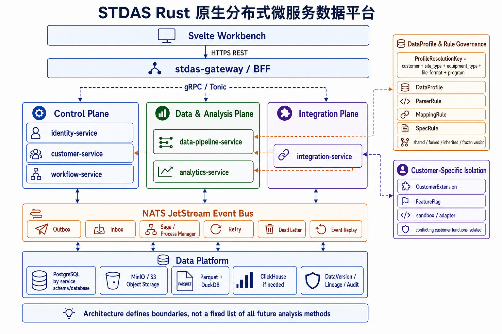

架构图

{kind=link}
服务边界
stdas-gateway外部 HTTPS API、BFF、认证上下文、请求聚合和限流。identity-service用户、角色、token、会话、权限和 CustomerScope。customer-service客户专属服务，管理 CustomerConfig、DataProfile、规则绑定、规则分叉、FeatureFlag 和客户扩展。data-pipeline-service摄入、解析、归一化、canonical TestData、DataVersion 和 lineage。analytics-service分析执行框架、算法 registry、聚合、OLAP adapter、告警、工作台和导出。workflow-serviceSaga、Process Manager、作业状态、重试、补偿和 Dead Letter。integration-serviceMES、客户接口、外部文件交换和设备数据同步。DataProfile 与规则治理
DataProfile 不是一个客户一个 Profile，而是某类测试数据在特定上下文下的规则集合，通常由
customer_code、site_type、equipment_type、file_format、program_name、
program_version 和 effective_time 定位。
- 多个 DataProfile 可以共享同一个 ParserRule、MappingRule 或 SpecRule。
- 需要隔离变更时，可以从共享规则复制分叉出独立规则。
- OSAT 厂内通用数据类型也通过 DataProfile 分类，但可复用相同规则。
- 所有规则绑定、复制分叉和版本冻结都必须可追溯。
为未来能力留空间
总体架构不穷举所有分析方法、报表类型、接入类型或客户专属需求。后续前端和后端设计可以围绕统一上下文、registry、contract、DataVersion 和扩展隔离机制继续发散。
分析服务边界
analytics-service 承诺的是分析执行框架，而不是固定算法清单。未来可以新增工程统计、异常检测、设备对比、客户指定指标、报表型分析或模型类能力。
客户专属能力隔离
客户强行要求加入且可能与主架构冲突的能力，必须登记为 CustomerExtension，通过 DataProfile 或 FeatureFlag 启用，并在 adapter 或 sandbox 中隔离执行。